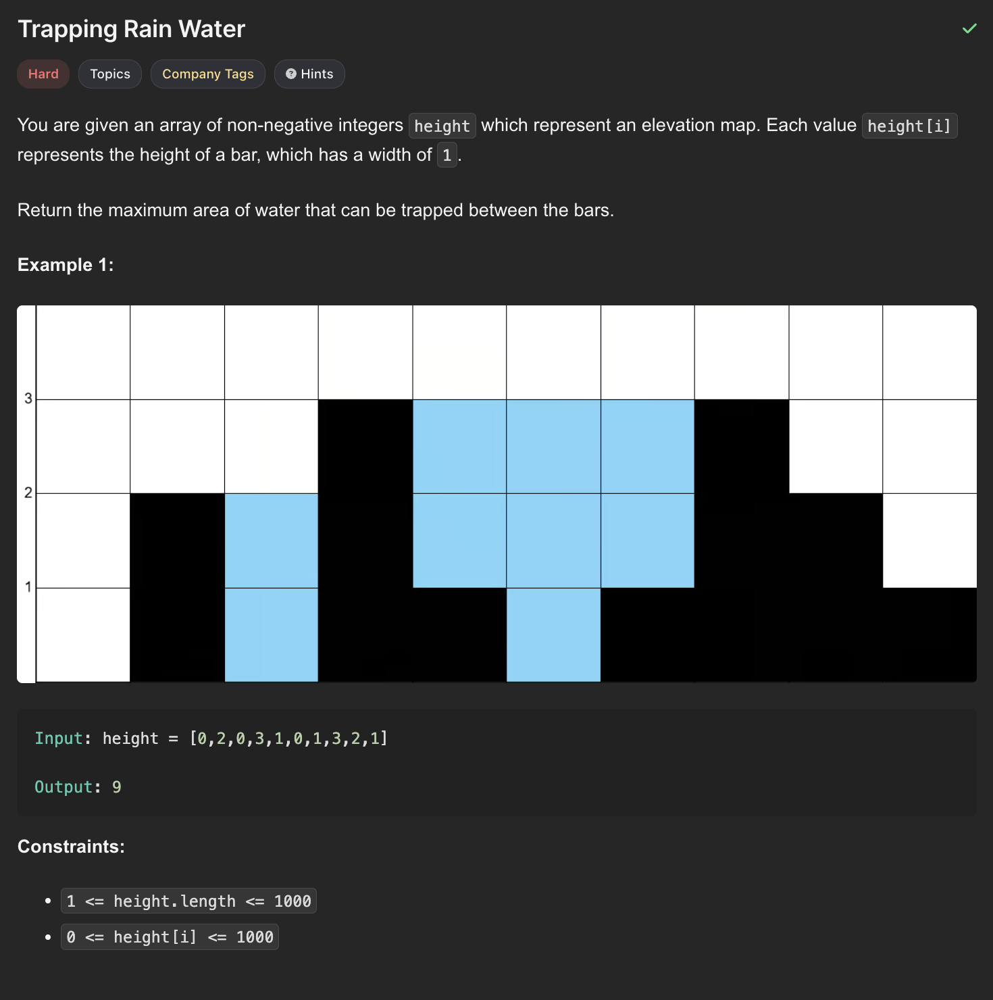

Track the best wall on each side, then accumulate water by always advancing the side with the smaller boundary.
Memory Game DraftHard
Problem Statement
Solved
HardTopicsCompany TagsHints
You are given an array of non-negative integers height which represent an elevation map. Each value height[i] represents the height of a bar, which has a width of 1.
Return the maximum area of water that can be trapped between the bars.
Example 1

Input:height = [0,2,0,3,1,0,1,3,2,1]
Output:9
Constraints
1 <= height.length <= 1000
0 <= height[i] <= 1000
Python Solution
Two Pointers
Keep the highest wall seen from the left and right. Whichever side has the smaller boundary is safe to resolve now, because the opposite side is tall enough to cap the water there.
Time: O(n)Space: O(1)
Q&A Mode
Why this solution works
from typing import List
class Solution:
def trap(self, height: List[int]) -> int:
if not height:
return 0
l, r = 0, len(height) - 1
leftMax, rightMax = height[l], height[r]
res = 0
while l < r:
if leftMax < rightMax:
l += 1
leftMax = max(leftMax, height[l])
res += leftMax - height[l]
else:
r -= 1
rightMax = max(rightMax, height[r])
res += rightMax - height[r]
return res
Practice Mode
Type the solution from memory
•Waiting for your first line
The function definition is already provided, just like LeetCode. Your code has to match the stored solution exactly.
from typing import List
class Solution:
def trap(self, height: List[int]) -> int: